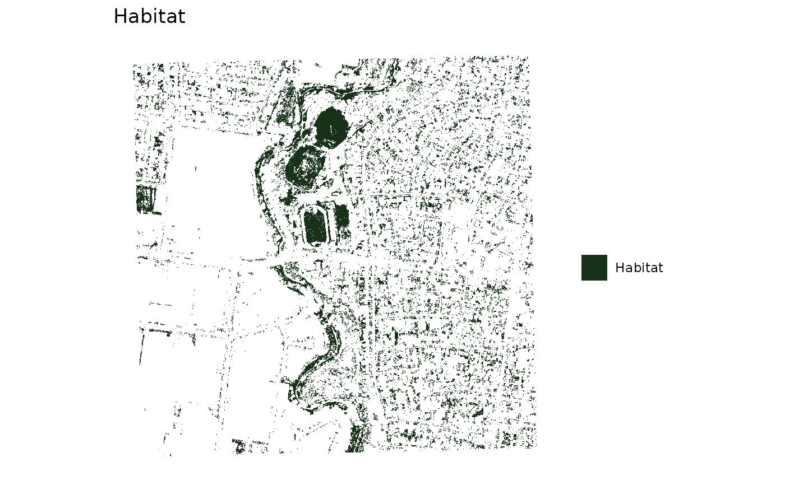
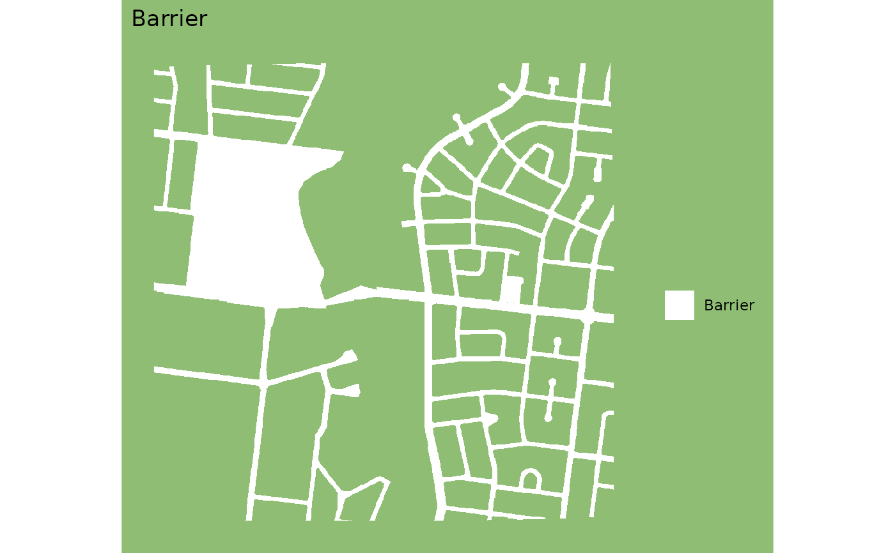
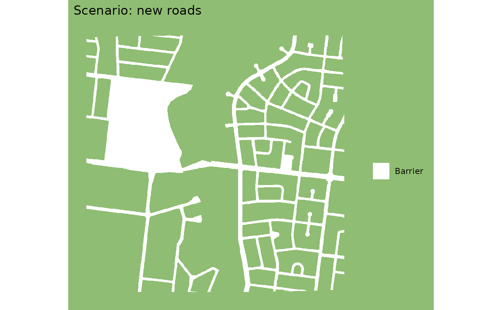

The habitat or the barrier by itself, rather than combined as
gg_barrier_habitat_interpatch_dist() draws them. For looking at what went
into an analysis, and at a scenario layer against the layer it replaces.
Usage
gg_layer(layer, kind = c("habitat", "barrier"), title = NULL)Details
kind picks the colours, so a layer looks the same here as it does in the
combined map. A barrier is white there, read as cuts through the interpatch
zone, so a barrier drawn alone is white on that same green: white on white
would be nothing at all.
See also
gg_barrier_habitat_interpatch_dist() for the combined map, and
urbio_colours() for the palette this draws from.
Examples
gg_layer(example_habitat(), "habitat")
#> <SpatRaster> resampled to 500554 cells.

gg_layer(example_barrier(), "barrier")
#> <SpatRaster> resampled to 500554 cells.

# a scenario layer, titled for what it changes
gg_layer(example_barrier(), "barrier", title = "Scenario: new roads")
#> <SpatRaster> resampled to 500554 cells.
